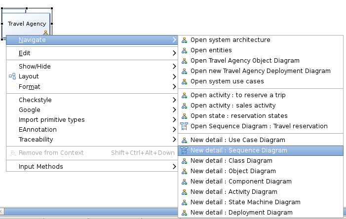

Getting started Tutorial
This section describes how to start using the UML Designer either from existing UML models or by creating a new one.
After installing UML Designer, cheatsheets are available in your Eclipse installation which explain how to :
- Create a new project
- Create a new diagram
- Import an existing model
- Start with the sample model
Open the welcome page to get direct links to these cheatsheets.
You can also have a look also to the Getting started video :
Starting from the Travel Agency example
Import the TravelAgency project using the menu File/New/Example....

Pick the Travel Agency UML wizard and click on Next and then Finish.

Click Finish on the wizard and a TravelAgency project appears in your workspace.

When the project gets opened, you will be greeted with the main package hierarchy diagram.

From here you can navigate to existing diagrams by right clicking on the Model.
Create a new UML model & UML project
To create a new UML project, enable the Modeling Perspective.

Then click on the wizard shortcuts at the top-right of the Eclipse Workbench. Select New UML Project.

You can choose specific name for the project and the root element for the project on the next pages.

When you press the Finish button, the projects gets created and automatically enabled the UML viewpoints.

Now you can right click on the displayed package to create all the available diagrams or use the palette to create the package structure that fits to your needs. You can also open the Package hierarchy diagram and starts from here:

Display & edit an existing UML model
To create a new UML design on existing UML models, simply drag & drop the models in the Project or use the Add Model action available on the Project Dependencies item.

UML designer viewpoints
Four viewpoints are specified on the UML Designer each bringing the following views:
- Capture
- Package hierarchy diagram
- Use case diagram
- Design
- Class diagram
- Component diagram
- Composite diagram
- Deployment diagram
- State machine diagram
- Activity diagram
- Sequence diagram
- Review
- Extend
- Profile diagram
You can select either viewpoints or all depending on your use case. So it is advised to select at least the Capture and Design viewpoints.